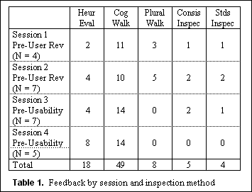
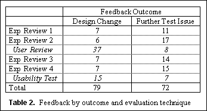

User Interface Evaluation in an Iterative Design Process:
A Comparison of Three Techniques
Pamela Savage
- AT&T Bell Laboratories
- 200 Laurel Ave. Rm. 4D-532
- Middletown, NJ 07748
- (908) 957-3073
- savage@mtgbcs.att.com
ABSTRACT
This paper compares the results of three different user interface evaluation techniques: expert reviews, user reviews, and interactive usability testing. Results from these techniques were obtained during the iterative design of a graphical user interface for an interactive multimedia messaging application. User reviews resulted in significantly more redesign of the user interface (UI), however, they also involved the most expense and effort to conduct. Expert review feedback tended to identify areas that required further user testing. A comparison of these techniques and the user interface design changes resulting from their feedback is discussed. The relative benefits and limitations of the techniques are addressed within the framework of an iterative design process.
KEYWORDS:
usability inspections, usability testing, user interface evaluation, iterative design
INTRODUCTION
During the last decade, the use of an assortment of usability inspection methods has become prevalent as project schedules become shorter and budgets become tighter. In general, the expense and effort involved in testing real users has been viewed by the development community as an impedance to software development. In an effort to include testing early in the design cycle, inspection methods such as heuristic evaluation, cognitive walkthroughs, formal usability inspections, pluralistic walkthroughs, and feature inspections [3][4][5][6] have been used followed by user testing later in the design cycle. Anecdotal evidence suggests that products that have undergone usability inspections result in fewer defects found during subsequent user tests than do those that have not been inspected [2]. Experimental evidence has found that heuristic evaluations uncover the most serious UI problems when compared to usability testing, guidelines, and cognitive walkthroughs [1]. However, relatively little is known about how these methods interact with each other during an iterative design process. Further exploration of this issue follows in which the feedback obtained during the design process of a graphical user interace was recorded, analyzed, and compared.
DESIGN AND EVALUATION PROCESS
An iterative design process was used during the development of a graphical user interface (GUI) for an interactive multimedia messaging application. The design process consisted of three phases: 1) observation phase in which an understanding of the problem space was obtained through literature and patent reviews, competitive product reviews, task analysis, and structured interviews with end-users, 2) visualization phase during which the GUI was storyboarded and simulated according to a scripted scenario, and 3) an evaluation phase during which feedback about the interface was obtained through expert reviews, user reviews, and usability testing.
Expert Reviews
As its name implies, expert reviews are conducted in the presence of human factors specialists and consist of a combination of standard inspection methods (in this case, heuristic evaluation, cognitive and pluralistic walkthroughs, and consistency and standards inspections) [3][5] all bundled into one inspection session. During our expert reviews, the lead UI designer performed an assortment of messaging tasks (e.g., view new messages, listen to an audio message, view a video message, and create a mixed media message) on an interface that was simulated using SuperCard on a Macintosh PC. Tasks were performed according to a scripted scenario while the "experts" observed and evaluated the heuristics and components of both the interface and the scenario. Consistency and standards inspections were included during the expert reviews, since user interface designers responsible for other components of the application and for corporate GUI standards participated in the expert review sessions. Sessions lasted approximately one hour.
Reviews
Four user review sessions were held during which target end-users of the application viewed a slide show presentation that was created by photographing screens from the simulation which had been modified as a result of expert review feedback. Participants were self-reported heavy PC users. The earlier scripted scenario was also used during this research and in all 42 participants observed 25 discrete messaging activities. Each session lasted about two hours. Approximately 30 minutes of the session entailed completing paper and pencil questionnaires and the remainder involved a slide show demo/presentation of the messaging features and group discussion. Prior to viewing slide shows, participants provided demographic information and rated the importance of eleven key messaging features. Next, they viewed slide show demonstrations of the interfaces, made ratings on a questionnaire of the perceived ease of use and desirability of the features demonstrated, and expressed their views toward the features in structured focus group discussion. Finally, they made post-demo ratings of the importance of the eleven key messaging features that they had rated at the beginning of the session.
Usability Testing
Usability tests were conducted during a role-play interaction. The tester explained to subjects that she understood that they were the office experts on how to use this new messaging software that had just been installed on her PC. The tester asked each of the nine participants to explain to her the steps necessary to perform seven "typical" multi-step tasks that tested key messaging user interface components. As subjects explained how to complete each task, the experimenter navigated through the interface. When an impasse was met (i.e., it just didn't work the way the participant expected it to), the participant explained how it "should" work and the simulation was modified in real-time, except in a few cases that required a significant amount of reprogramming. Each subject was tested individually and required about one hour to complete testing. Subjects were potential target customers who were self-reported heavy PC users.
RESULTS AND DISCUSSION
Table 1 shows the feedback obtained during the four expert reviews categorized by inspection method [3][4][5]. Recall that these techniques were bundled into each session. Results of a Friedman nonparametric test revealed that the cognitive walkthrough technique resulted in the greatest quantity of feedback during this iterative design process
[œ2 (4, N = 4) = 11.00, p < .05].

Table 2 shows the feedback obtained from all the expert and user evaluation sessions (in chronological order) categorized by feedback outcome. All feedback either resulted in UI design changes or identified areas requiring further testing. Table 2 reveals an interesting interaction between the feedback obtained from experts versus that obtained from end-users (shown in italics in the table). Notice that expert feedback tended to signal areas needing further testing, while end-user feedback tended to result in design changes to the user interface. Furthermore, the quantity of expert feedback tended to remain stable throughout the design process, while the quantity of design changes elicited from users decreased over time.

SUMMARY
This analysis examined the feedback patterns obtained within the framework of an iterative design process of a graphical user interface. All testing was conducted up-front in this design process using a simulation of the UI. Using simulations, testing can start very early in system development, even before a line of code is written.
Overall, expert reviews identified user interface issues that required further research with end-users, while end-user reviews and usability studies identified user interface design changes. Obtaining this feedback from experts allowed us to design alternative feature implementations to subsequently test with end users. It also allowed us to directly question users about specific design issues during our interactions with them. Experts tended to produce about the same quantity of feedback over time, while user feedback that resulted in design changes decreased over time as is expected in an iterative design process. Integrating the five inspection methods into a single expert review session streamlined the process of obtaining expert feedback. In summary, it was found that drawing upon the expertise of human factors specialists augmented end-user testing in that specific feature implementations and design issues could be effectively investigated and redesigned as appropriate.
ACKNOWLEDGMENTS
Special thanks to Susan Pearsall for her efforts in UI design and execution of the user reviews and to Mark Altom for his technical advice and encouragement throughout this research effort.
REFERENCES
- Jeffries, R., Miller, J., Wharton, C., & Uyeda, K. M. (1991). User interface evaluation in the real world: a comparison of four techniques. Proc. ACM CHI'90 Conf. (New Orleans, LA, April 27 - May 2), 119-124.
- Kahn, M. J., & Prail, A. (1994). Formal usability inspections. In J. Nielson and R. L. Mack (Eds.), Usability inspection methods (pp. 141-171). New York: John Wiley & Sons.
- Nielson, J. (1995). Usability inspection methods. Proc. ACM CHI'95 Conf. (Denver, CO, May 7 - 11), 377-378.
- Nielson, J. (1993). Usability engineering. Boston, MA: Academic Press.
- Nielson, J., & Mack, R. L. (Eds.) (1994). Usability inspection methods. New York: John Wiley & Sons.
- Wiklund, M. E. (1994). Usability in practice. Boston, MA: Academic Press.